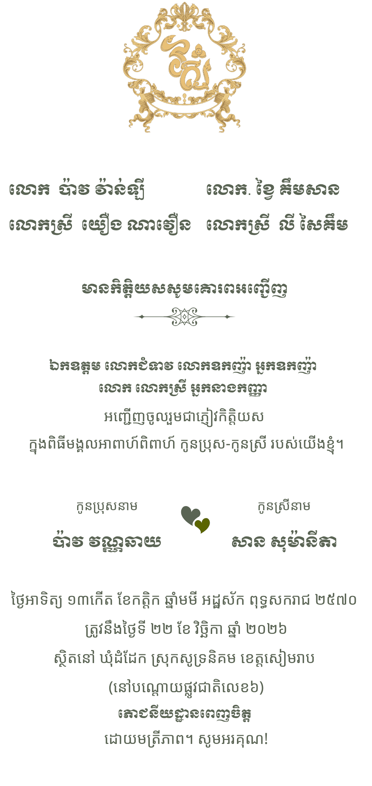
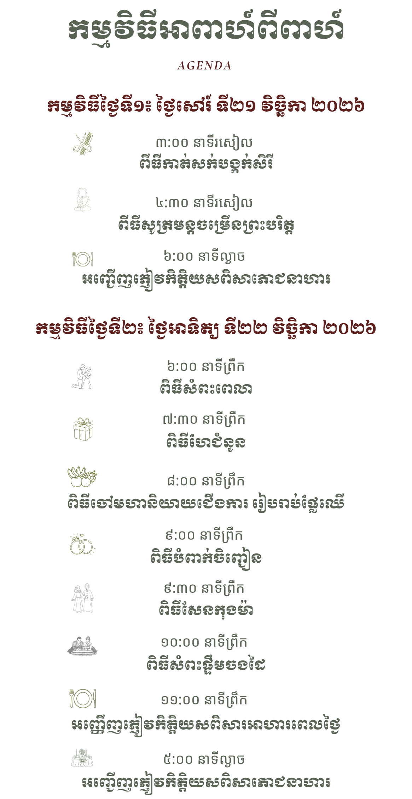
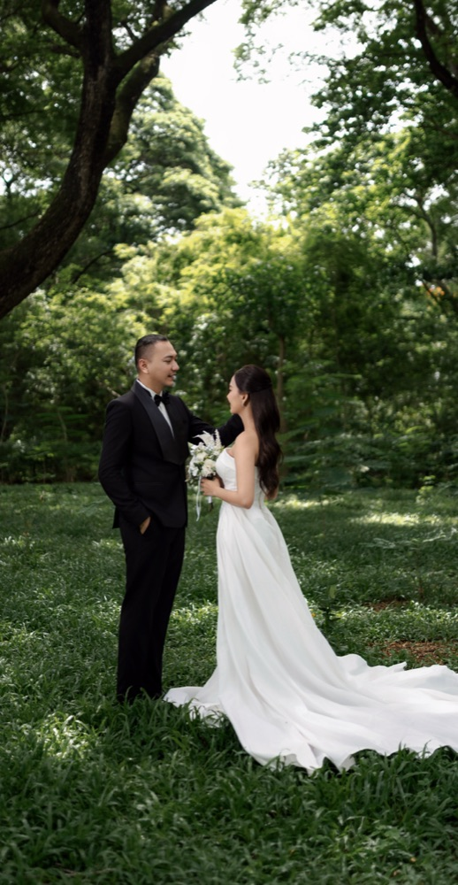
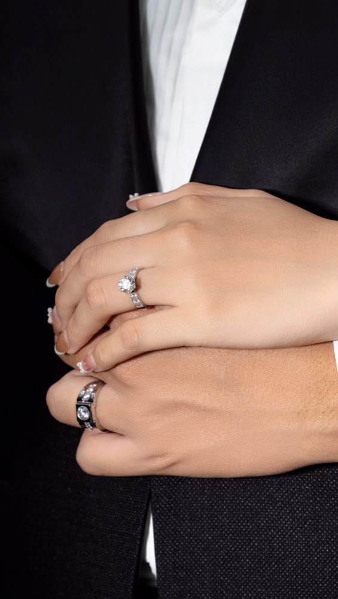
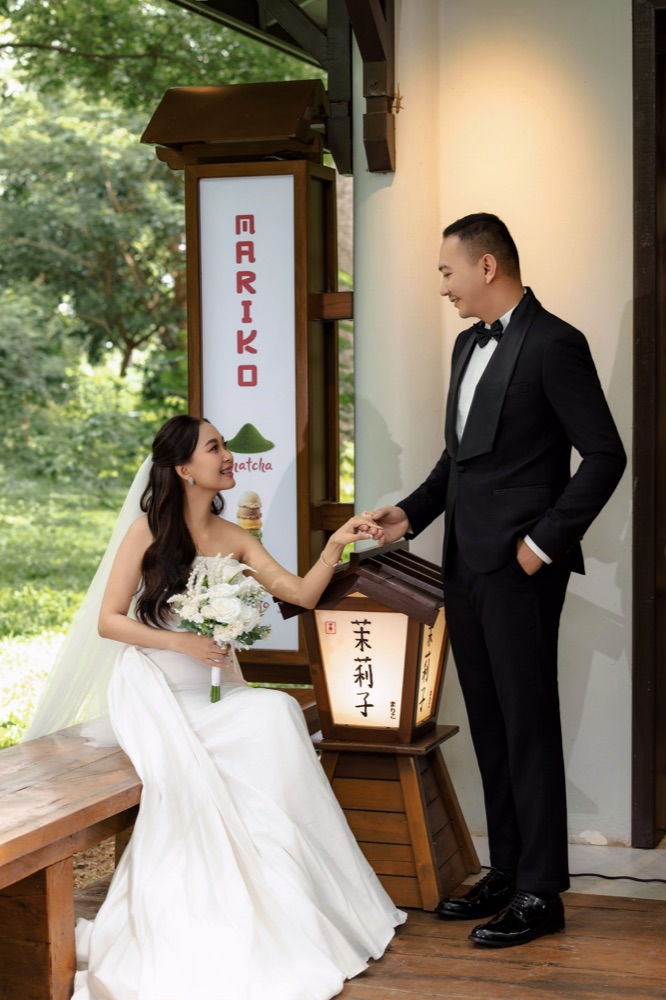
--
DAYS
--
HOURS
--
MINUTES
--
SECONDS
LET COUNTOWN WITH US
SAVE THE DATE
November 2026
1
2
3
4
5
6
7
8
9
10
11
12
13
14
15
16
17
18
19
20
21
23
24
25
26
27
28
29
30
OUR STORY
Gallery
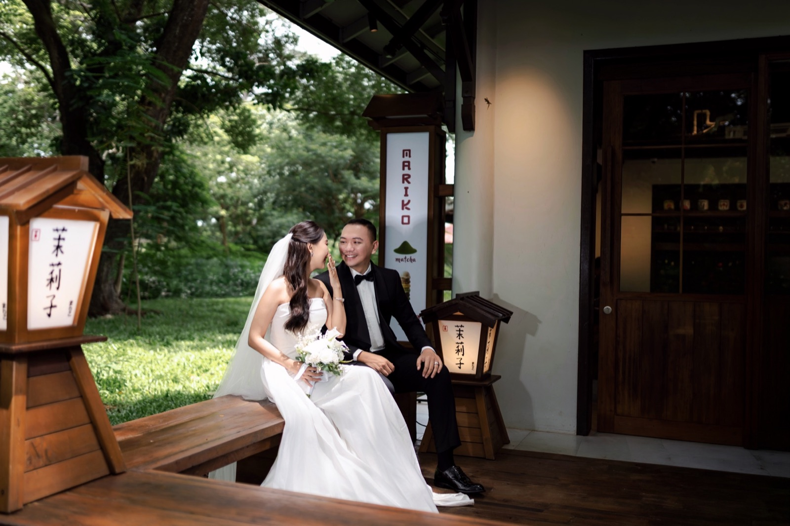
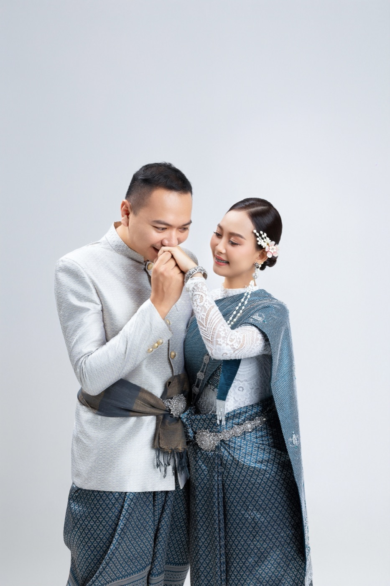
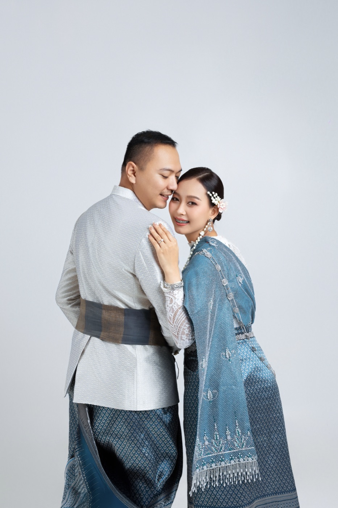
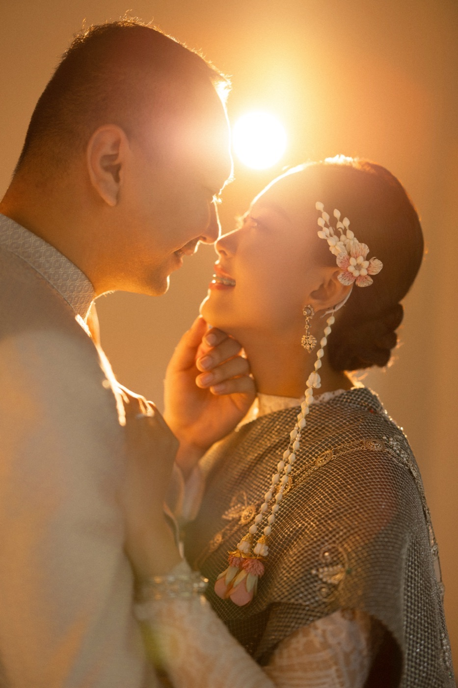
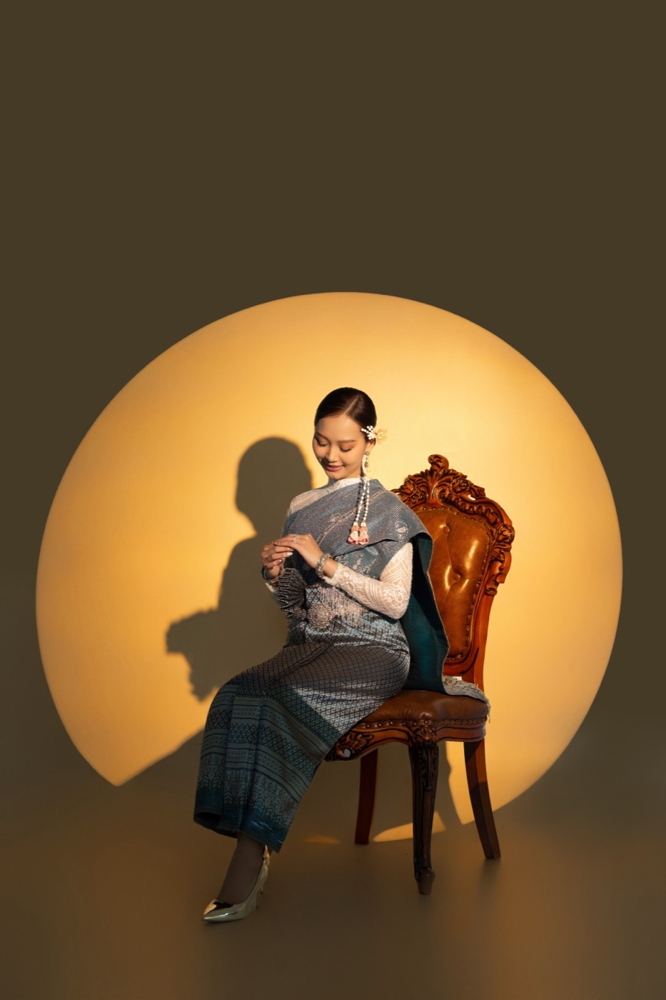
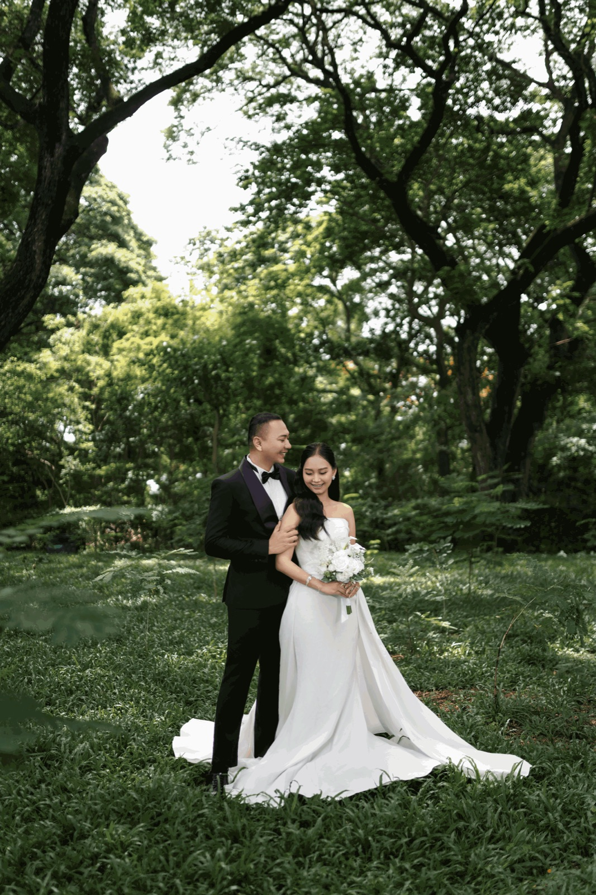
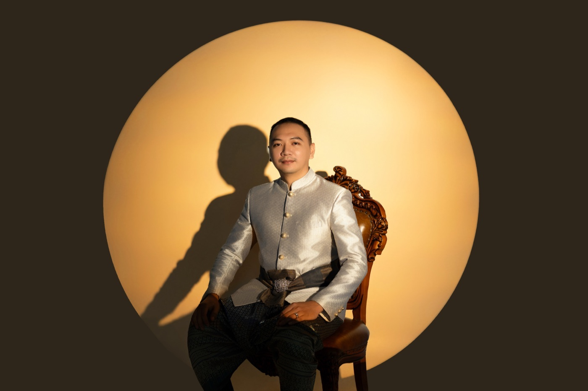
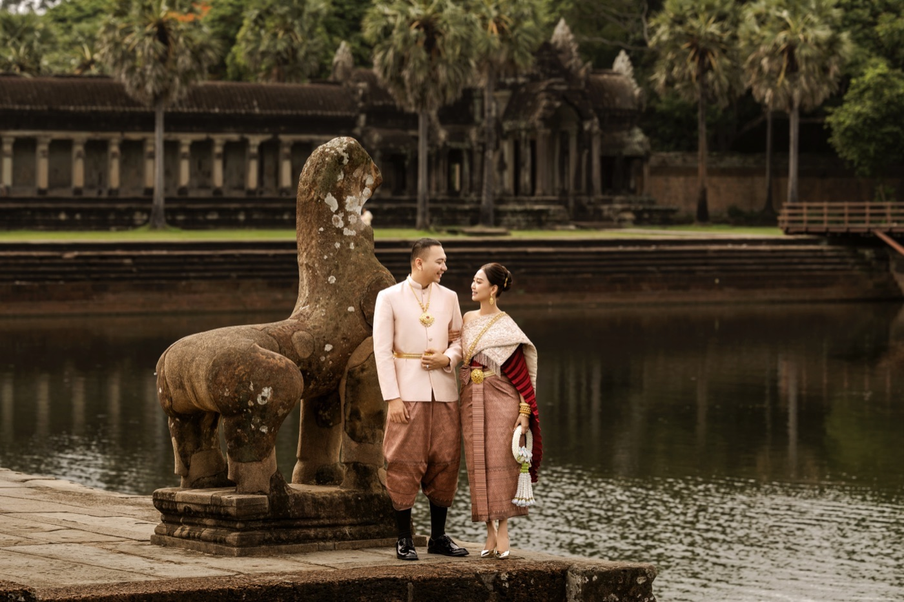
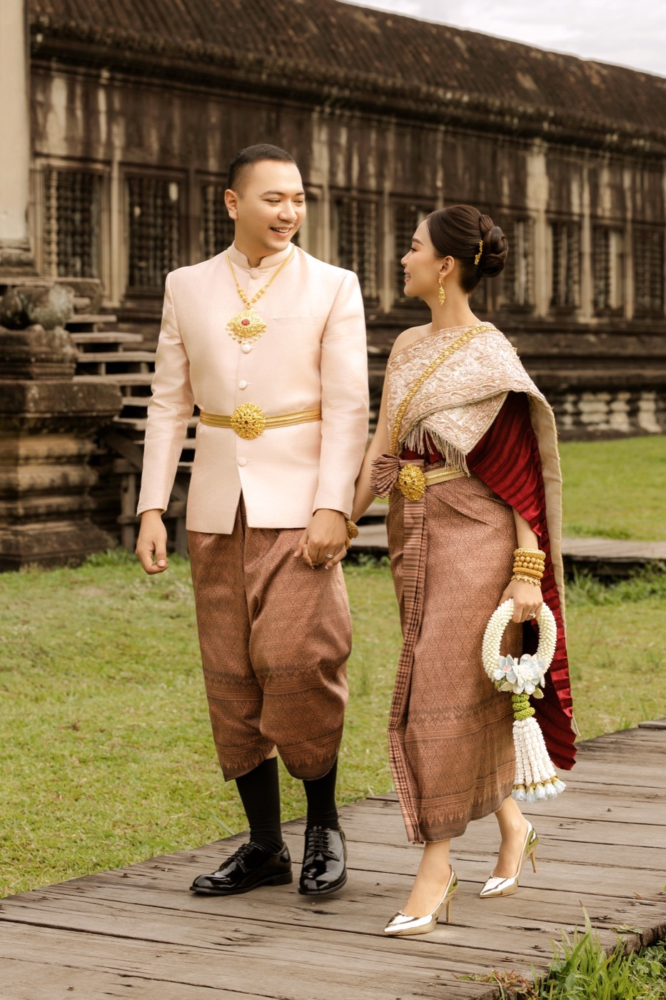
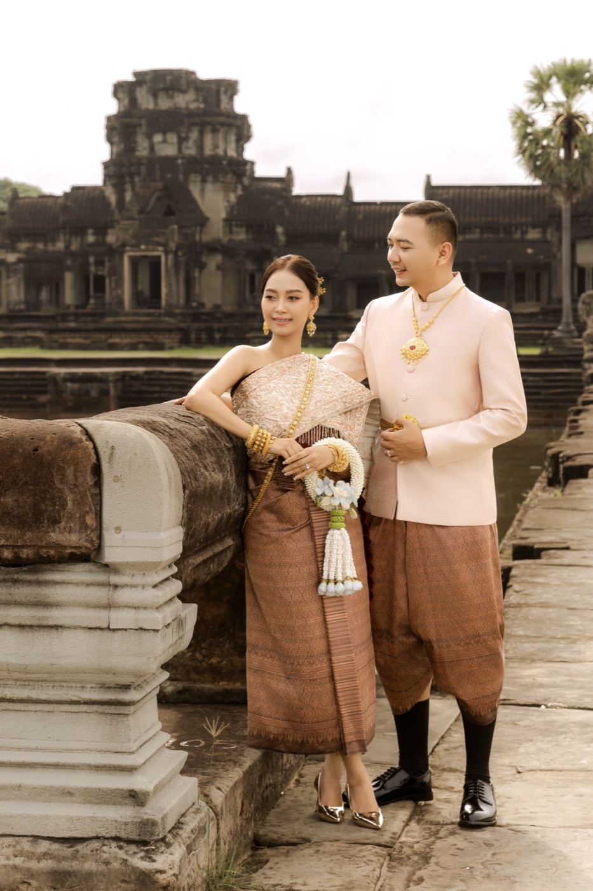
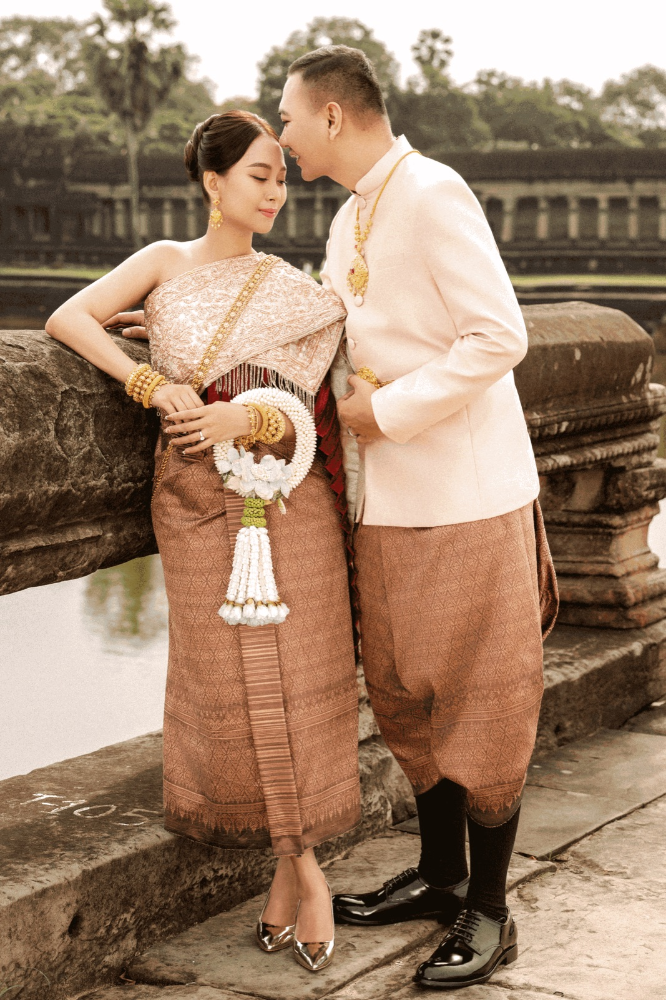
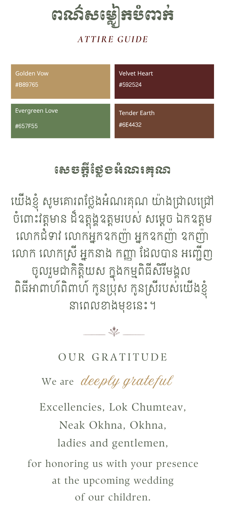